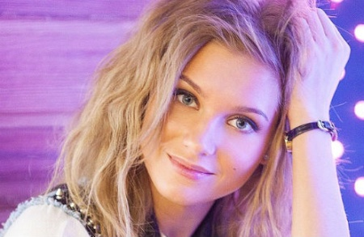
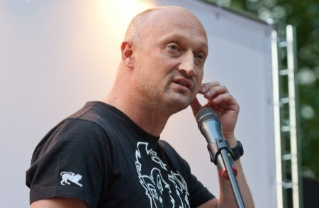
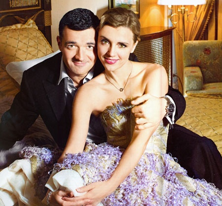
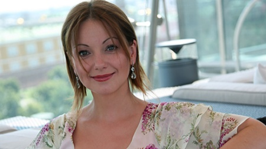
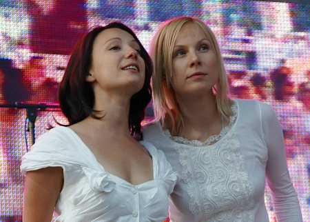

| Ф.И.О. |
Фото |
чем и кому помогают |
| Кристина Асмус |
 |
пожертвовала своими нарядами и вещами супруга.Все деньги, собранные на распродаже, будут переданы в благотворительный фонд |
| Гоша Куценко |
 |
Летом 2011 года актер основал благотворительный фонд «Шаг вместе», который занимается поддержкой детей, страдающих от такого заболевания, как церебральный паралич. |
| Егор Бероев и Ксения Алферова |
 |
Эта супружеская пара чуть более года назад учредила специальный фонд «Я есть!». Также как и Куценко, актеры помогают детям с ограниченными возможностями.
Особое внимание фонд уделяет детям с синдром Дауна, аутизмом и церебральным параличом |
| Ольга Будина |
 |
Эта актриса создала три года назад фонд «Обереги будущее». Благотворительный фонд занимается поддержкой детей, которые растут без должного воспитания. Особенно на помощь могут рассчитывать те, кто не находит взаимопонимания со взрослыми.
Будина старается помочь таким ребятам найти дорогу в жизни и раскрыть в себе всевозможные таланты. Кроме того, фонд занимается разработкой специальных психологических программ для детского развития.
|
| Дина Корзун и Чулпан Хаматова. |
 |
Эти актрисы создали в 2006 году фонд «Подари жизнь», о котором в настоящий момент много пишут и говорят. Задачей фонда является поддержка детей с гематологическими и онкологическими заболеваниями.
Хаматова и Корзун помогают специализированным клиникам, закупая необходимые препараты и оборудование, создают волонтерские группы, оказывают психологическую и социальную помощь больным детям, находят доноров крови и стараются привлечь внимание общества к детям, больным раком.
Помимо этого, девушки часто организовывают благотворительные концерты, акции, аукционы прямо в помещении детской клинической больницы.
|